RAG가 놓치는 세 가지
발표자 박혜진 님은 회사에서 LLM 위키를 개발하는 AI(Artificial Intelligence) 엔지니어예요. 이 강의는 개인 노트를 넘어 팀이 함께 쓰고, 사람이 일일이 챙기지 않아도 스스로 갱신되는 위키까지 다뤄요. 출발점은 다들 쓰는 RAG가 어디서 아쉬운지예요.
슬라이드는 RAG를 세 칸으로 줄여 보여 줘요. 왼쪽 '문서 더미'에서 가운데 '조각(청크) 검색'으로 질문과 비슷한 조각을 찾고, 오른쪽 '그 자리에서 조립'에서 가져온 청크만 보고 답을 만들어요. 아래 초록 줄이 발표자가 강조한 한 줄이에요. 벡터 검색이든 키워드든 grep이든 본질은 "찾기 → 그 자리에서 일회성 조립"으로 같다는 거예요.
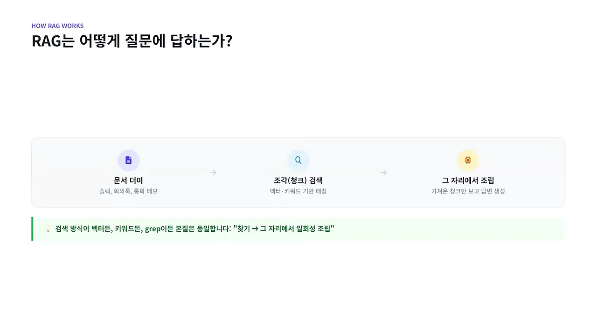
빈틈 1. 답이 여러 문서에 흩어져 있을 때
왼쪽 카드는 회사 지식이 흩어지는 모습이에요. 회의록에는 초기 아키텍처 결정이, 슬랙 스레드에는 일정 변경이, 통화 메모에는 변경 이유가 있어요. 셋을 이어 봐야 현재 상황이 보여요. 오른쪽 빨간 카드가 문제예요. 검색은 질문과 표면적으로 비슷한 조각만 위에서부터 가져와요. "이 고객사 지금 담당자 누구야?"라고 물으면 '담당자'가 또렷하게 적힌 지난 킥오프 회의록의 옛 담당자가 먼저 걸릴 수 있어요.
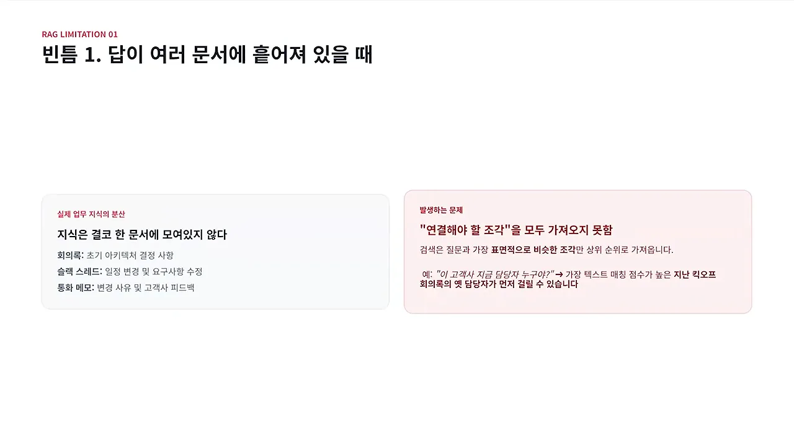
빈틈 2. 조립한 결과가 남지 않을 때
운 좋게 여러 조각을 모아 좋은 답을 만들었다고 해 봐요. 왼쪽 카드처럼 같은 질문을 열 명이 하면 LLM은 같은 검색과 조립을 열 번 해요. 어제 힘들게 내린 결론이 어디에도 저장되지 않아서예요. 오른쪽 카드는 문서가 늘수록 이 부담이 커진다는 점이에요. "이 요청이 벌써 네 번째 들어왔다" 같은 맥락은 원본 어디에도 적혀 있지 않으니, RAG는 매번 더 많은 청크 사이에서 처음부터 찾아야 해요.
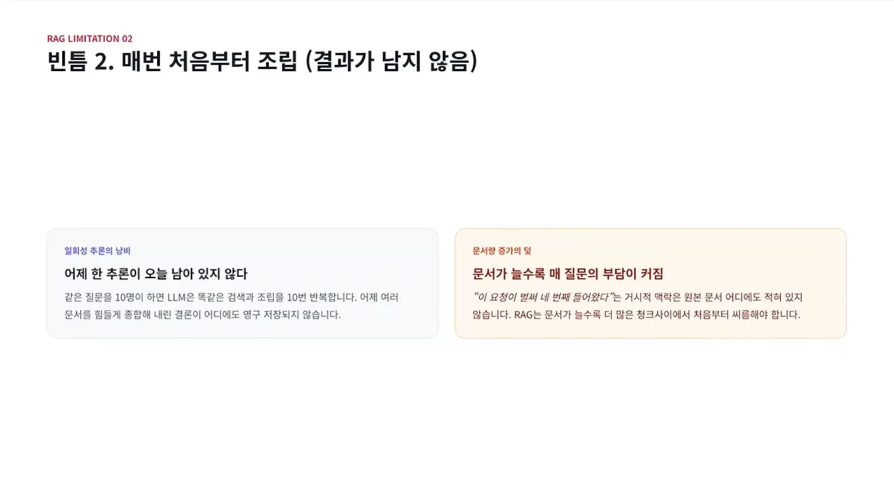
빈틈 3. 옛 내용과 새 내용이 함께 검색될 때
지난달 회의에서 결정을 뒤집어도 지난 회의록 파일은 지우지 않아요. 그래서 왼쪽 카드처럼 검색 엔진은 두 문서를 모두 '유사도 높음'으로 가져와요. 오른쪽 카드는 그다음이에요. 어느 쪽이 최신인지는 매 질문마다 모델이 판단해요. 회의록엔 날짜가 있어 잘 맞힐 때도 많지만 틀릴 때도 있어요. 발표자가 더 중요하게 본 건 굵게 표시된 부분, "서로 내용이 어긋난다"는 사실 자체가 어디에도 기록되지 않는다는 점이에요.
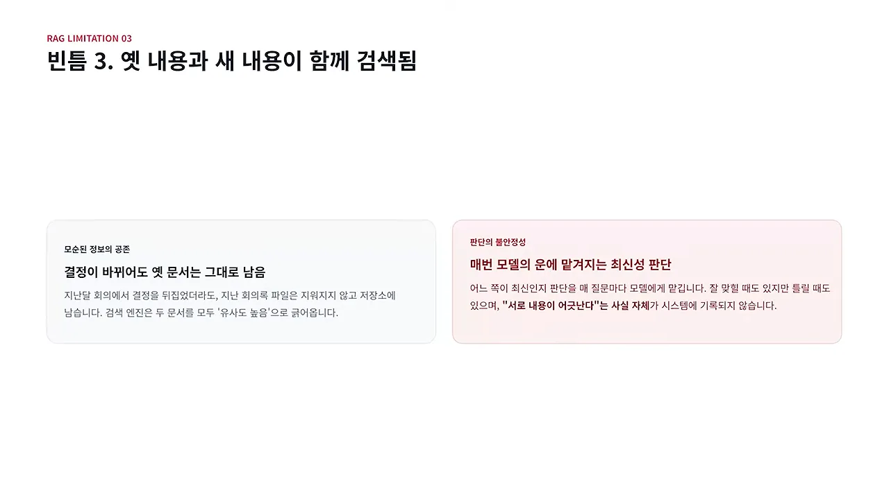
그래서 문제는 '조립'이에요
세 가지를 모은 결론이 이 슬라이드예요. RAG를 버리자는 게 아니에요. 원문을 찾는 일은 RAG가 잘해요. 문제는 찾은 다음 하는 조립을 매번 새로 하고 매번 버린다는 거예요. 그렇다면 조립한 결과를 미리 정리해 남겨 두면 어떨까요. 이 질문이 LLM Wiki의 출발점이에요.
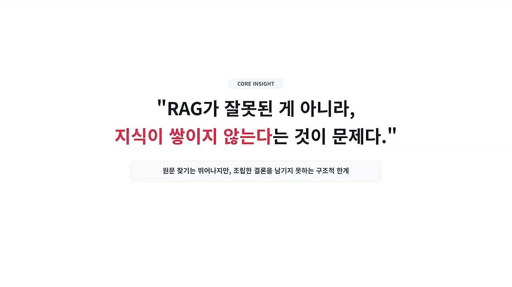
LLM Wiki의 세 층과 세 동작
이 아이디어는 Andrej Karpathy가 2026년 4월 X에 글을 올리고 GitHub Gist에 마크다운 문서 하나를 공개하면서 퍼졌어요. 슬라이드 왼쪽이 그 Gist 화면(karpathy / llm-wiki.md)이고, 발표자 말대로 문서는 꽤 짧아요. 오른쪽 초록 카드가 핵심 아이디어예요. 사람은 원본을 던져 두고 질문만 하고, 상호 참조, 요약, 모순 갱신, 고아 문서 정리 같은 귀찮은 유지보수는 LLM이 맡아요.
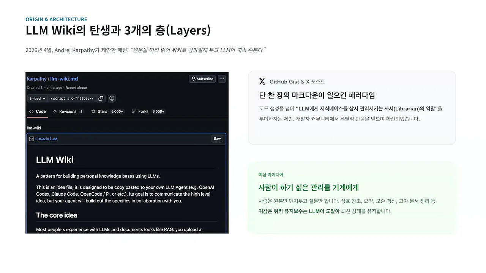
세 층: raw, wiki, 스키마
구조는 딱 세 층이에요. 왼쪽 LAYER 01 raw/는 사람이 넣는 원본이에요. 슬랙 대화, 회의록, 통화 메모처럼 아무 문서나 넣을 수 있고, LLM은 읽기만 해요. 나중에 "원래 문서에 뭐라고 적혀 있었지?"를 확인하는 곳이라 절대 고치지 않아요. 가운데 LAYER 02 wiki/는 LLM이 직접 쓰는 마크다운이에요. 고객사, 사람, 결정, 아키텍처처럼 주제별로 나누고, 구성은 원하는 대로 바꿔요. 오른쪽 LAYER 03 CLAUDE.md가 스키마, 곧 위키의 규칙이에요.
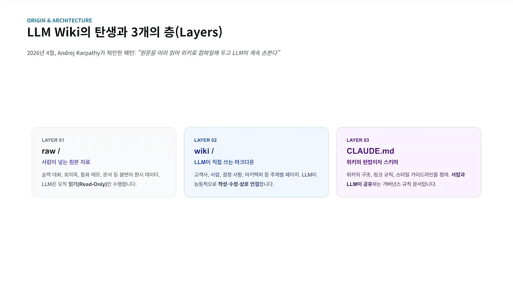
스키마 파일 이름은 도구마다 달라요. Claude Code는 보통 CLAUDE.md, Codex는 AGENTS.md를 쓰고, 아예 schema.md처럼 직접 정해도 돼요. 이름보다 내용이 중요해요. 폴더를 어떻게 나눌지, 링크를 어떻게 걸지, 내용이 어긋나면 어떻게 표시할지를 적어 두고, 사람과 LLM이 함께 보며 고쳐 가요.
세 동작: Ingest, Query, Lint
세 층 위에서 LLM이 하는 일은 세 가지예요. 카드 01 Ingest는 '쓰기 시점 종합'이에요. 새 원본 한 건을 읽고 관련된 위키 페이지 5~15장을 함께 고쳐요. 원본 하나가 위키 한 장이 되는 1대1이 아니에요. 카드 02 Query는 이미 정리된 위키를 먼저 보고 답하고, 가치 있는 답은 새 문서로 남겨요. 카드 03 Lint는 미해결 모순, 낡은 정보, 고아 페이지, 누락된 링크를 주기적으로 점검해 고쳐요.
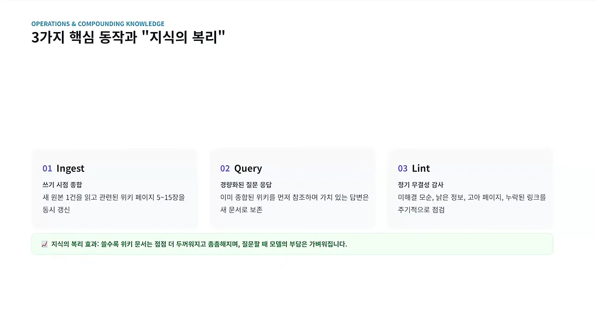
세 층과 세 동작이 어떻게 맞물리는지는 두 슬라이드에 나뉘어 있어서 한 장으로 모아 봤어요. 원본은 Ingest를 거쳐서만 위키로 들어가고, 질문은 위키에서 답을 얻고 좋은 답을 다시 위키에 넣어요. Lint는 위키 안에서 돌아요. 스키마는 이 모든 동작의 규칙이에요.
RAG와 위키는 역할을 나눠요
발표자는 둘을 한 표로 정리해요. 가장 큰 차이는 첫 줄이에요. RAG는 지식의 탐색과 발견, LLM Wiki는 지식의 정제와 축적이에요. 둘째 줄의 조립 시점도 눈여겨볼 만해요. RAG는 질문이 들어올 때마다(Read-time) 조립하고, 위키는 자료가 입력될 때(Write-time) 조립해요.
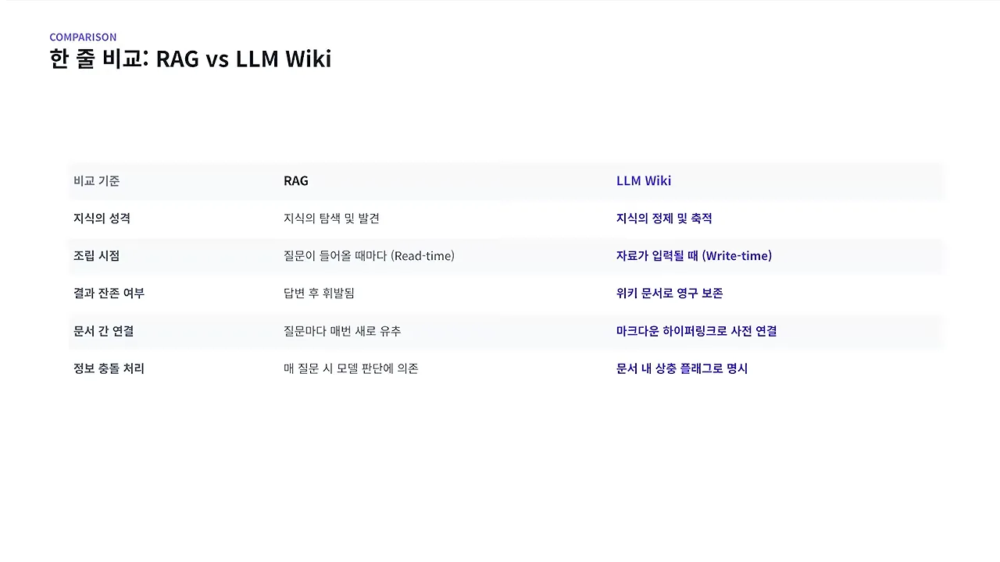
표를 우리말로 옮기면 이래요.
| 비교 기준 | RAG | LLM Wiki |
|---|---|---|
| 지식의 성격 | 탐색과 발견 | 정제와 축적 |
| 조립 시점 | 질문이 들어올 때마다 | 자료가 입력될 때 |
| 결과가 남나요 | 답한 뒤 사라져요 | 위키 문서로 남아요 |
| 문서 간 연결 | 질문마다 새로 추측해요 | 마크다운 링크로 미리 걸어요 |
| 정보 충돌 | 매번 모델 판단에 맡겨요 | 문서 안에 상충으로 표시해요 |
대체가 아니라 역할 분담이에요
이렇게 보면 위키가 무조건 좋아 보이지만, 발표자는 바로 선을 그어요. 왼쪽 COEXISTENCE 카드처럼 RAG는 거대한 원문 더미에서 증거를 빨리 찾고, 위키는 찾은 증거를 조립해 쌓아요. 위키의 모든 문장에 출처 링크를 붙이면 원문이 궁금할 때 언제든 돌아가 확인할 수 있어요.
오른쪽 '실제 구축 시 고려할 비용' 카드가 한계예요. 첫째, 토큰 비용이에요. 문서 하나를 넣을 때마다 위키 여러 장을 고치니 LLM 호출이 많고, 실습에서도 문서 대여섯 개에 몇 분씩 걸렸어요. 둘째, 위키가 수천 장으로 커지면 어떤 페이지를 볼지 고르기 어려워져 결국 검색이 다시 필요해요. 셋째, 환각 누적이에요. 할루시네이션이 섞인 내용도 똑같이 쌓이고, 잘 정리된 위키라서 사람들이 더 쉽게 믿어요.
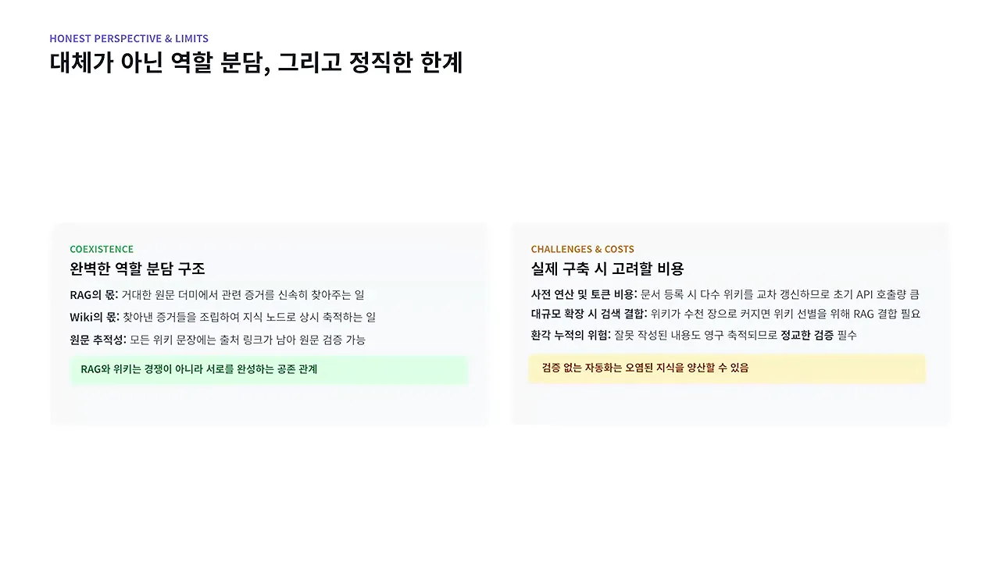
실습①: 옵시디언에서 팀 위키 만들기
지금까지 본 개념을 옵시디언에서 직접 만들어 봐요. 옵시디언에 새 볼트를 만들고, 터미널 플러그인을 하나 설치해 그 안에서 Claude Code를 띄워요. 시나리오는 가상의 고객사 '한빛물산'과 문서검색 AI PoC를 진행하는 팀이에요. 회의록, 슬랙, 통화 메모로 팀 위키를 만들어요.
1단계: 스키마부터 만들어요
먼저 Karpathy의 LLM Wiki 글을 프롬프트에 그대로 붙여 넣고 위키 아키텍처를 만들어 달라고 해요. 원본 쪽은 통화, 문서, 회의록, 슬랙만 두고, 간단한 실습이라 다른 폴더는 만들지 말라고 같이 적었어요. Claude Code는 핵심 스키마를 직접 쓰고 템플릿 같은 초기 파일은 서브에이전트에게 맡겨 만들어요.
아래가 그렇게 생긴 CLAUDE.md의 '1. 계층 구조' 부분이에요. 맨 위 ①번 raw/ 아래 calls, docs, meetings, slack, assets가 있고 'LLM은 읽기만 한다'고 적혀 있어요. ②번 wiki/ 아래에는 index.md, log.md, overview.md와 sources, clients, projects, people, topics, decisions, analyses 폴더가 있어요. ③번 templates/가 페이지 종류별 틀이에요. 코드 블록 아래 두 줄이 규칙이에요. raw는 절대 고치지 않고, 사람이 wiki를 직접 고쳤다면 그 수정을 존중해 덮어쓰지 않아요.
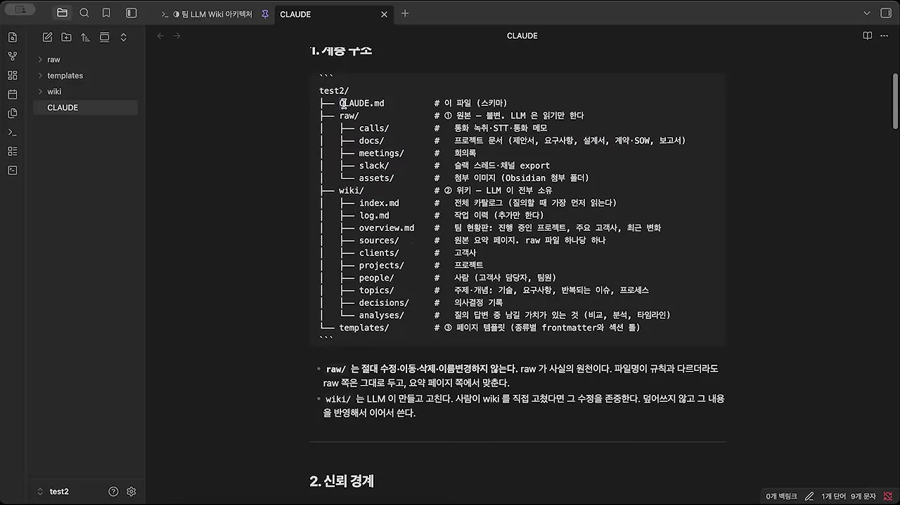
스키마에는 이 밖에도 파일 이름 규칙, 모든 주장에 출처와 시점 달기, 상충되는 내용 표시, 민감 정보를 다루는 법, 인덱스와 로그 쓰는 법, 사용자와 합의한 뒤 스키마를 고친다는 절차까지 들어가 있어요. 발표자는 이걸 보며 자기 팀에 맞게 계속 고쳐 가라고 해요.
2단계: 원본을 넣고 ingest를 시켜요
raw 아래에 원본 일곱 개를 미리 넣어 뒀어요. 왼쪽 파일 트리에 calls 2개, docs 1개, meetings 2개, slack 2개가 보여요. 위쪽에 열린 건 그중 하나인 9월 15일 슬랙 스레드(#proj-hanbit)예요. 아래 Claude Code 입력창에 "raw에 7개 문서를 넣어뒀어. 이 파일들을 ingest 처리해줘."라고 쳐 둔 게 보여요.
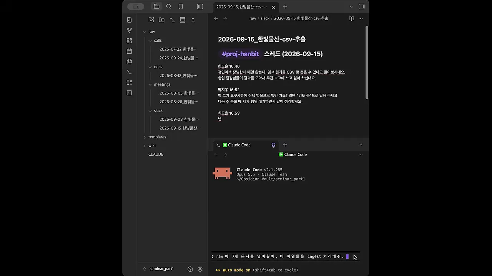
3단계: 결과를 살펴봐요
원본 일곱 개로 위키 페이지가 훨씬 많이 생겼어요. 왼쪽 트리의 wiki 아래에 clients(한빛물산), decisions(결정 네 건), people(박지우, 윤서아, 이서준, 정민아 …)가 보여요. 열린 페이지는 sources 폴더의 '2026-07-22 한빛물산 사전미팅 통화'예요. 원본을 그대로 옮긴 게 아니라 위쪽 속성에 유형, 날짜, 원본 경로, 참석자를 달고, 본문을 요약, 핵심 내용, 결정사항으로 다시 정리했어요.
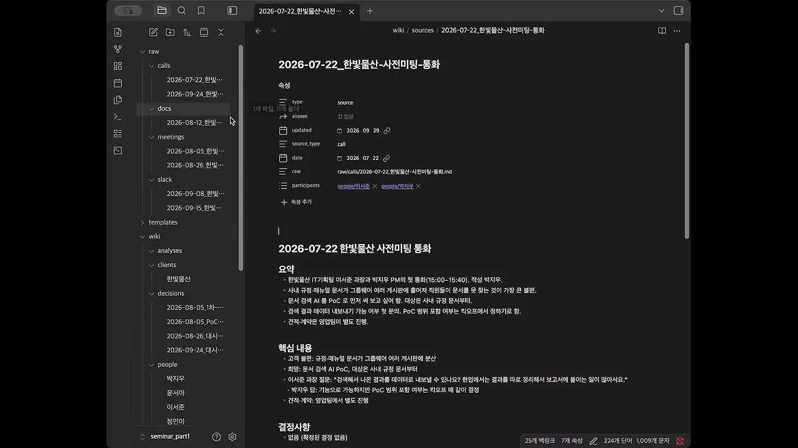
프로젝트 페이지 '한빛물산 문서검색 AI PoC'가 이 실습의 핵심이에요. 개요에는 목표(사내 규정 문서를 자연어로 검색하고 근거 문서를 함께 표시)와 범위(규정 문서 검색 + 이용 현황 대시보드)가 있고, 줄마다 괄호 안에 출처 링크가 붙어 있어요. 눈에 띄는 건 가운데 주황색 '상충' 상자예요. 8월 회의록에서는 대시보드를 개발하자고 했는데, 9월 24일 정민아 차장과의 통화에서는 대시보드를 빼고 검색 API(Application Programming Interface) 연동을 먼저 하자는 제안이 나왔다고 적혀 있어요. 위키는 회의록 결정을 따르되, 10월 1일 주간회의에서 확정될 예정이라고 남겨 뒀어요.
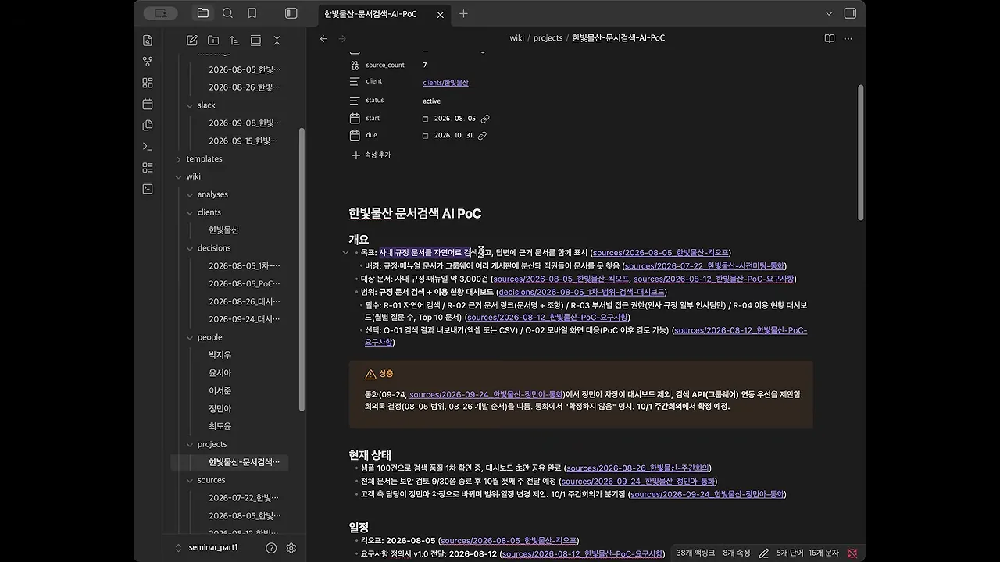
위키가 회의록 쪽을 고른 이유는 스키마에 있어요. CLAUDE.md의 '6. 내용 작성 규칙'을 보면 6.1은 모든 사실에 출처와 날짜를, 6.2는 덮어쓰지 말고 아래에 '변경 이력'을 남기라고 해요. 6.3 '출처 신뢰도 순서'가 판단 기준이에요. 계약서·공식 문서, 회의록의 결정사항, 통화 녹취·메모, 회의 중 논의, 슬랙 대화 순서이고, 어긋나면 높은 쪽을 따르되 어긋났다는 사실을 표시해요. 6.4는 그 표시를 [!warning] 상충 콜아웃으로 하라는 형식이에요.
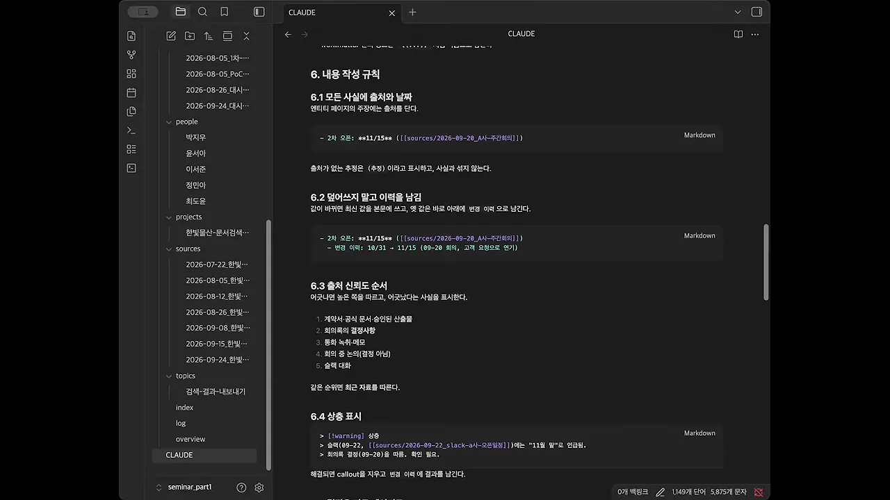
같은 페이지에서 시연 일정도 상충으로 잡혔어요. 회의록은 10월 말 PoC 시연을 목표로 했는데, 9월 24일 통화에서는 11월 중순으로 하자고 제안했다는 내용이에요.
사람 페이지도 여러 문서를 엮어 만들어졌어요. 발표자는 슬랙에 "이서준 과장님께 메일을 보냈는데 반송됐다"는 대화를 일부러 넣어 뒀어요. 위키의 '이서준' 페이지를 보면 속성의 role에 'IT기획팀 과장 (2026-08 말 퇴사)'가 있고, 파란 '퇴사' 상자에 8월 말 퇴사와 정민아 차장이 9월부터 업무를 이어받았다는 내용이 출처 두 개와 함께 적혀 있어요. 아래 '변경 이력' 줄에는 '고객 측 담당 → 퇴사(8월 말), 후임 정민아'가 남아요.
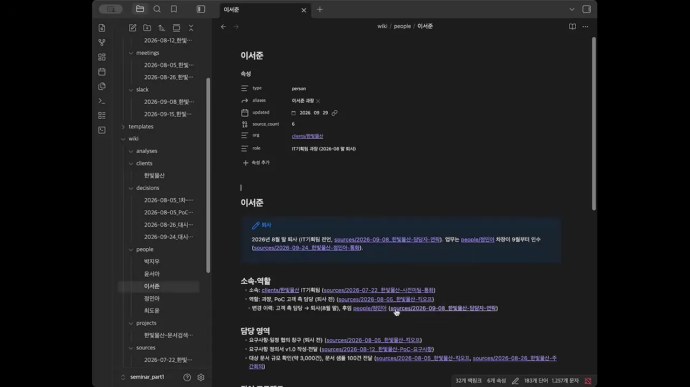
정민아 차장 페이지에는 관심과 선호도 기록돼요. 슬랙에서 누군가 "표로 정리된 걸 좋아하시는 것 같다"고 한 말이 들어갔는데, 본인이 직접 한 말이 아니라 다른 사람이 느낀 간접 정보라는 점까지 함께 표시됐어요.
4단계: 그래프로 보고, 질문해요
옵시디언의 그래프 뷰를 열면 페이지들이 링크로 어떻게 묶였는지 한눈에 보여요. 가운데 보라색으로 강조된 노드가 '2026-08-26 한빛물산 주간회의'이고, 거기서 뻗은 선이 박지우, 이서준, 정민아 같은 사람과 관련 결정, 프로젝트 페이지로 이어져요.
이제 위키에 질문해요. 발표자는 "10월 1일 미팅 준비해 줘"처럼 물었어요. Claude는 먼저 위키의 index를 읽어요. index에는 고객사, 프로젝트, 담당자, 결정, 주제가 유형별로 한 줄씩 정리돼 있어요. 예를 들어 담당자 칸에는 '정민아 — 한빛물산 IT기획팀 차장, PoC 고객 측 담당(9월~), 표 형식 보고 선호 (출처 3)'처럼 상태와 출처 개수가 붙어요.
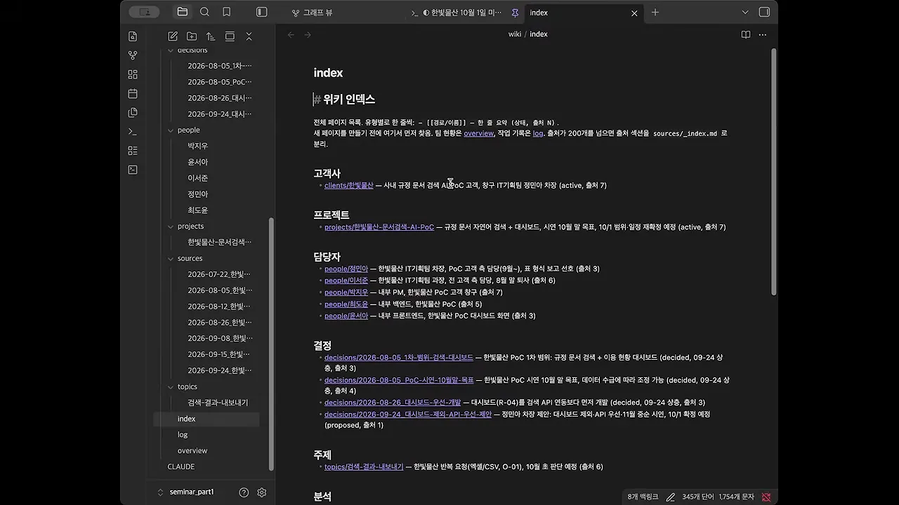
답변 화면을 보면 '2. 정해야 할 것'에 범위, 시연일, 검색 결과 내보내기, 전체 문서 전달이 정리돼 있고, '3. 회의 전에 챙길 미결 사항'에는 체크박스로 할 일이 있어요. 파란색으로 선택된 줄이 발표자가 짚은 부분이에요. 이서준 과장은 경영진 보고용 대시보드를, 정민아 차장은 현업 활용과 API 연동을 중시한다는 내용이에요.
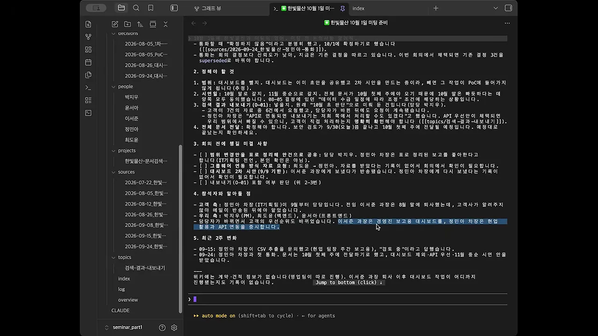
답변 끝에서 Claude는 회의가 끝난 뒤 회의록을 넣어 주면 다시 ingest해서 상충 표시를 정리하겠다고 하고, 이 브리핑을 위키에 저장할지 물어요. "저장해 줘"라고 하면 analyses 폴더에 새 페이지가 생기고 index에도 추가돼요. 좋은 답이 다음 질문의 재료가 되는, 지식이 쌓이는 과정이에요.
사람을 기다리는 위키는 늦어져요
실습은 잘 돌아갔지만, 팀에서 쓰려고 하니 문제가 보였어요. 슬라이드 왼쪽 카드가 '1인 관리자의 한계'예요. 실습은 문서 7개를 처리하는 데 약 8분이 걸렸고, 그동안 한 사람이 화면을 지켜봐야 했어요. 팀에서는 수많은 팀원이 슬랙과 노션에 수시로 문서를 쏟아내요. 그때마다 누군가 "이 문서 ingest 해 줘"라고 쳐야 하고, 그 말을 하지 않으면 위키는 옛 내용에서 멈춰요.
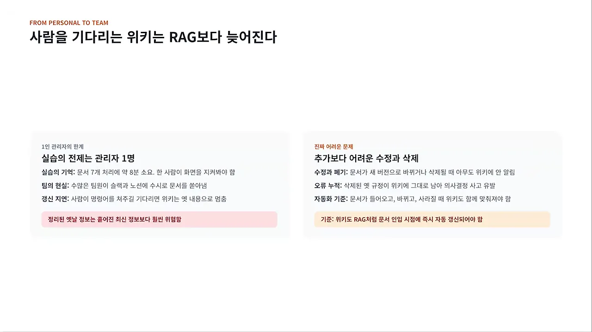
오른쪽 카드는 더 어려운 문제예요. 문서가 새 버전으로 바뀌거나 삭제될 때는 아무도 위키에 알리지 않아요. 지워진 옛 규정이 위키에 그대로 남으면 잘못된 의사결정으로 이어져요. 그래서 위키도 RAG처럼 문서가 들어오고, 바뀌고, 사라지는 시점에 바로 갱신돼야 한다는 기준이 나와요.
자동화하면 사람 검증이 빠져요
그래서 문서가 들어오면 바로 위키가 갱신되게 자동화하고 싶어졌어요. 그런데 왼쪽 빨간 카드처럼 자동화는 사람의 눈을 없애요. 실습에서는 발표자가 터미널 출력을 직접 보고 승인했지만, 새벽에 서버가 혼자 돌면 아무도 확인하지 않아요. 예를 들어 퇴사한 사람을 '퇴사하지 않았다'고 잘못 쓰면, 그 틀린 내용이 정돈된 마크다운으로 조용히 쌓여 위키 전체의 신뢰를 망쳐요.
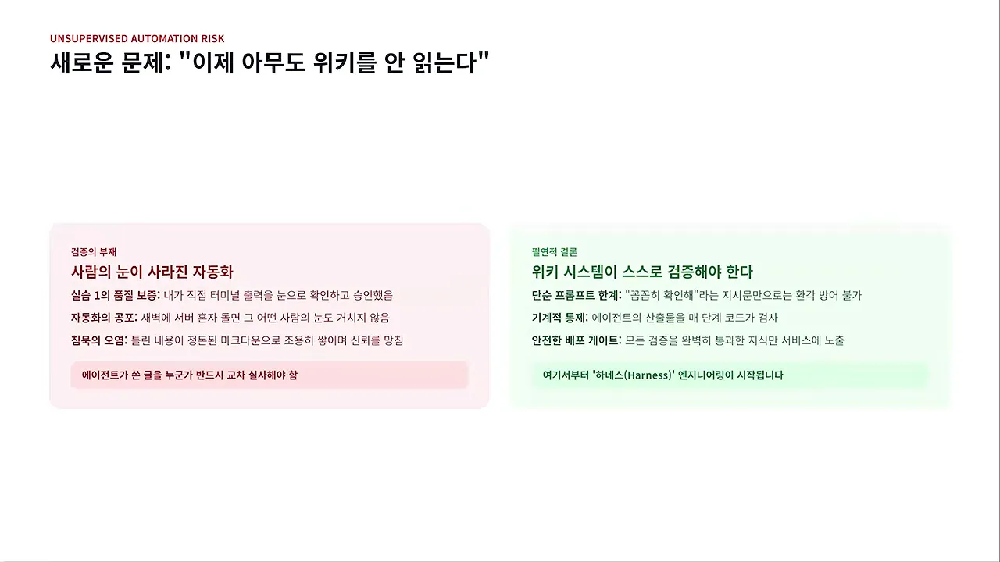
"꼼꼼히 확인해"라고 프롬프트에 쓰면 되지 않을까요. 발표자는 그걸로는 부족하다고 해요. 프롬프트는 이렇게 하라는 지시일 뿐, 강제가 아니기 때문이에요. 그래서 에이전트가 낸 결과를 코드로 검산하고, 통과한 것만 사람들에게 내보내는 구조를 생각하게 됐어요.
하네스란 무엇이고, 두 원칙은 뭘까요
하네스는 많이들 들어 봤을 개념이에요. 슬라이드 맨 위 문장처럼, 하네스는 AI를 가두는 족쇄가 아니라 에이전트가 제 힘을 발휘하도록 감싸는 실행 환경이에요. 오른쪽 끝 'Agent = Model + Harness'가 정의예요. 모델을 뺀 나머지, 즉 컨텍스트, 메모리, 검증 루프를 모두 합친 게 하네스예요.
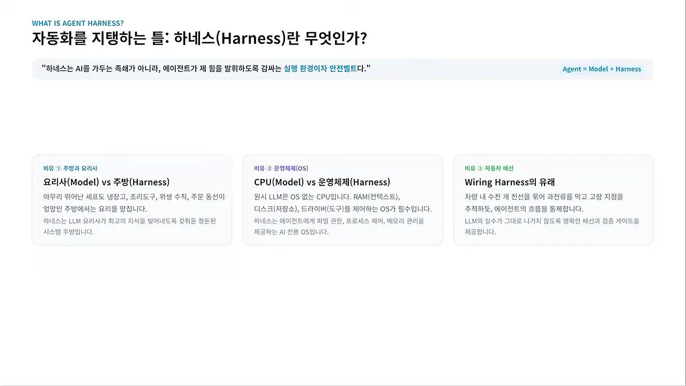
나머지 두 카드는 슬라이드에만 있는 비유예요. 가운데는 LLM을 운영체제 없는 중앙처리장치에, 하네스를 파일 권한과 프로세스, 메모리를 관리하는 운영체제에 빗대요. 오른쪽은 이름의 유래예요. 자동차 안 수천 개의 전선을 묶어 고장 지점을 추적하게 하는 배선 묶음처럼, 하네스도 에이전트의 흐름을 통제해요. 요즘은 같은 모델이라도 하네스를 얼마나 잘 갖추느냐에 따라 성능이 크게 달라져요.
흐름도를 보기 전 두 원칙
발표자가 환경을 만들기 전에 정한 규칙은 두 가지예요. 왼쪽 PRINCIPLE 01은 '판단은 에이전트, 검사는 코드'예요. 기준은 단순해요. 매번 똑같은 답이 나와야 하는 결정론적인 일은 코드에 맡겨요. 마크다운 링크가 깨졌는지, JSON(JavaScript Object Notation) 형식이 맞는지 같은 거예요. LLM도 JSON을 잘 내지만 혹시 깨질 수 있으니 코드로 확인해요. 반대로 원문을 읽고 판단해야 하는 일, 이 문장이 실제로 원문에 있는지 같은 건 코드가 할 수 없으니 에이전트에게 맡겨요.
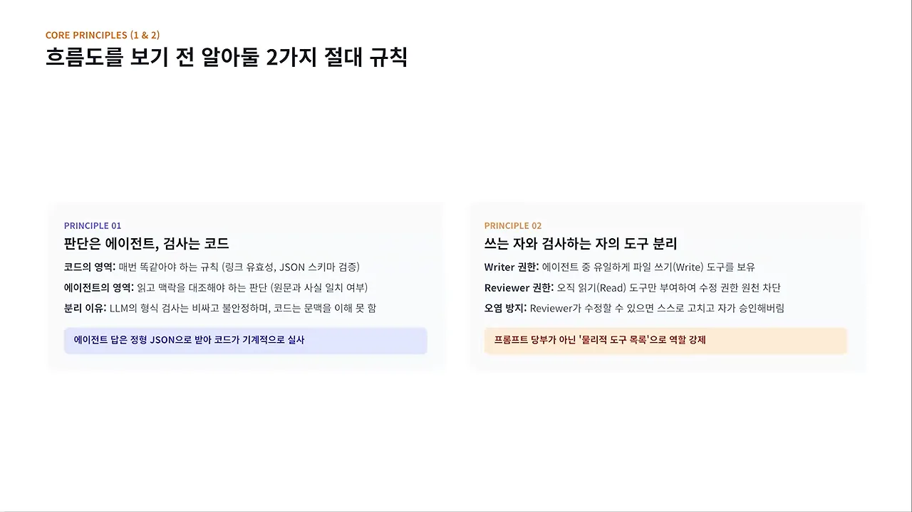
여기서 중요한 건 에이전트의 답을 그냥 읽지 않는다는 점이에요. 정해진 JSON 형태로 답을 받고, 코드가 그걸 한 번 더 검사해 통과한 것만 다음 단계로 보내요.
오른쪽 PRINCIPLE 02는 쓰는 에이전트와 검사하는 에이전트의 도구를 나누는 거예요. writer는 에이전트 중 유일하게 파일 쓰기 도구를 갖고, reviewer는 읽기 도구만 가져요. 검사하는 쪽이 고칠 수 있으면 자기가 고치고 자기가 통과시켜 버려서 검사의 의미가 없어지거든요. 그래서 프롬프트에 "고치지 마"라고 쓰는 대신 도구 자체를 주지 않아 시스템으로 막아요.
위키 빌더 하네스의 흐름
두 원칙으로 만든 전체 흐름이 이 슬라이드예요. 오른쪽 위 범례처럼 회색 테두리 상자는 코드로 구현한 규칙(검증·게이트)이고, 주황 테두리 상자는 에이전트가 판단하고 생성하는 부분이에요. 세 칸이 왼쪽부터 순서대로 이어지고, 칸마다 아래 빨간 줄이 실패했을 때 되돌아가는 길이에요.
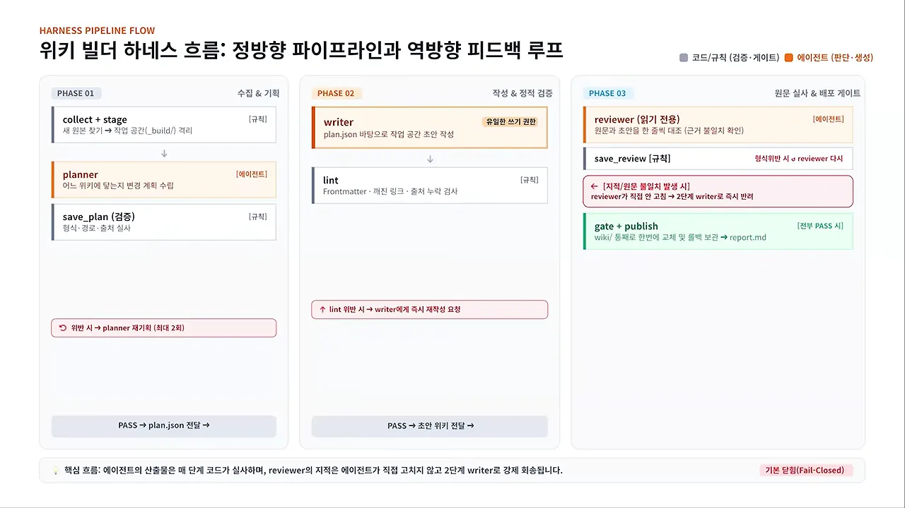
칸별로 풀면 이래요.
| 단계 | 누가 | 무엇을 | 실패하면 |
|---|---|---|---|
| collect + stage | 코드 | 새 원본이 있는지 찾고 작업 공간(_build/)을 격리해 만들어요 | — |
| planner | 에이전트 | 어떤 위키 페이지를 만들고 고칠지 계획해요 | — |
| save_plan | 코드 | 계획(plan.json)의 형식, 경로, 출처, 파일이 실제로 있는지 검사해요 | planner가 다시 계획해요(최대 2회) |
| writer | 에이전트 | plan.json대로 작업 공간에 초안을 써요. 유일하게 쓰기 권한이 있어요 | — |
| lint | 코드 | 프런트매터, 깨진 링크, 빠진 출처를 검사해요 | writer가 바로 다시 써요 |
| reviewer | 에이전트(읽기 전용) | 원문과 초안을 한 줄씩 대조해 근거가 맞는지 봐요 | writer에게 돌려보내요 |
| save_review | 코드 | reviewer 답의 형식을 검사해요 | reviewer가 다시 판정해요 |
| gate + publish | 코드 | 모두 PASS일 때만 wiki/를 통째로 교체하고 report.md를 남겨요 | 발행하지 않아요 |
작업 공간 격리와 기본 닫힘 게이트
흐름도 밑에 깔린 원칙이 두 개 더 있어요. 왼쪽 PRINCIPLE 03은 서빙 공간과 작업 공간의 격리예요. 모든 빌드와 수정은 임시 폴더 _build/에서 하고, 사용자는 완성된 wiki/만 봐요. 격리하지 않으면 writer가 편집하는 동안 팀원이 반쯤 고쳐진 문서를 읽을 수 있어요. 직전 버전은 _releases/에 보관해 문제가 생기면 바로 되돌려요.
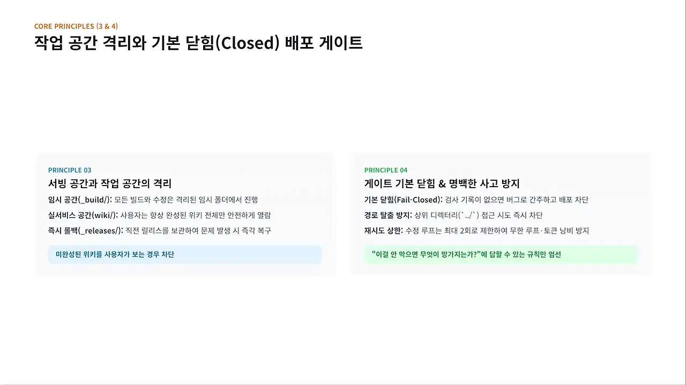
오른쪽 PRINCIPLE 04는 게이트를 기본 닫힘으로 둔다는 거예요. reviewer가 검사했는데 검사 기록이 없으면 통과가 아니라 차단해요. 기록이 없는데 통과되는 버그를 막으려는 거예요. 슬라이드에는 상위 디렉터리(../) 접근을 막는 경로 탈출 방지와, 수정 루프를 최대 2회로 묶어 무한 루프와 토큰 낭비를 막는 재시도 상한도 적혀 있어요.
실전 교훈: 판정을 못 내리는 reviewer
발표자가 실제로 겪은 사고예요. 왼쪽 빨간 카드처럼 어느 날 빌드를 돌렸는데 페이지가 발행되지 않았어요. 에러도 없고 로그도 멀쩡해 보였어요. 디버깅해 보니 reviewer에서 멈춰 있었어요. reviewer가 위키 문장의 근거를 원문에서 찾지 못하자 확인될 때까지 원문을 계속 다시 읽다가 상한에 걸려 판정 없이 끝났어요. 게이트는 '검토 기록 없음 = 차단'이니 그 페이지들을 조용히 막았고요.
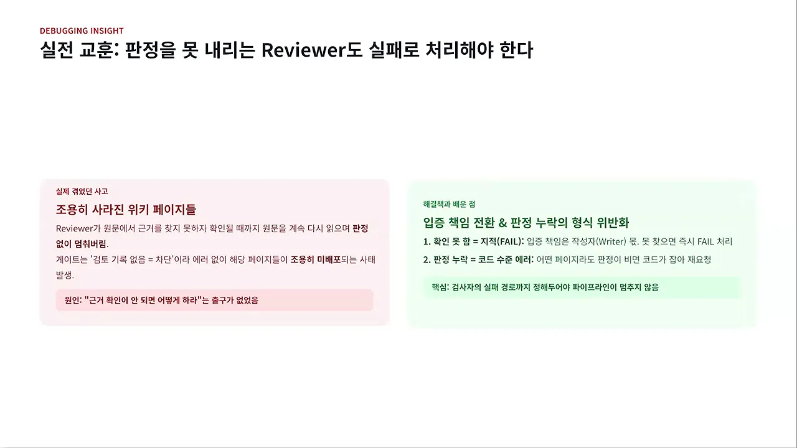
PASS와 FAIL만 정해 두고 '판정 불가'를 정하지 않았어요.
영상 46:35에서 보기오른쪽 초록 카드가 해결책이에요. 첫째, 확인하지 못한 것도 FAIL로 처리해요. 근거를 대야 할 책임은 작성자(writer)에게 있으니, 못 찾으면 바로 지적해요. 둘째, 어떤 페이지라도 판정이 빠지면 코드가 잡아서 reviewer를 다시 불러요. 발표자가 배운 건 writer만이 아니라 reviewer 같은 검사 에이전트도 실패할 수 있다는 거예요. 검사자가 실패하는 경로까지 정해 둬야 파이프라인이 멈추지 않아요.
문서마다 신뢰 상태를 붙여요
자동으로 돌리면 사람이 모든 문서를 바로 검수할 수는 없어요. 그래서 각 위키 페이지의 머리말(프런트매터)에 page_status 필드를 넣어, 이 문서를 지금 얼마나 믿어도 되는지 드러내요. 슬라이드 왼쪽이 세 단계이고, 오른쪽 검은 상자가 실제 프런트매터 예시예요. page_status: draft 옆에 '사람 검수 후 stable'이라는 주석이 달려 있어요.
| 상태 | 언제 | 읽는 사람에게 주는 신호 |
|---|---|---|
draft | 자동 빌더가 배포한 직후 | 사람이 아직 보지 않았으니 실무에 쓸 때는 교차 확인이 필요해요 |
stable | 담당자가 눈으로 확인을 마쳤을 때 | 팀 전체가 믿고 써도 되는 지식이에요 |
deprecated | 더 이상 현재 정보가 아닐 때 | 결정이나 규정이 바뀌었지만 이력과 링크를 위해 남겨 둔 문서예요 |
실습②: /build로 자동 위키 빌드 돌리기
마지막 실습은 하네스를 축소해 실제로 돌려 보는 거예요. 앞 실습의 '10월 1일 미팅'이 실제로 열렸다고 가정하고, 그 회의록을 raw/meetings에 하나 더 넣었어요. 화면이 그 새 원본 '2026-09-30 한빛물산 PoC 범위 확정 회의록'이에요. 아래 '결정사항' 세 줄이 이번 빌드가 위키에 반영해야 할 내용이에요. 이용 현황 대시보드(R-04)는 PoC 1차 범위에서 빼고, 검색 API(그룹웨어) 연동을 먼저 하고, 검색 결과 내보내기(O-01)도 PoC 범위에서 빼요.
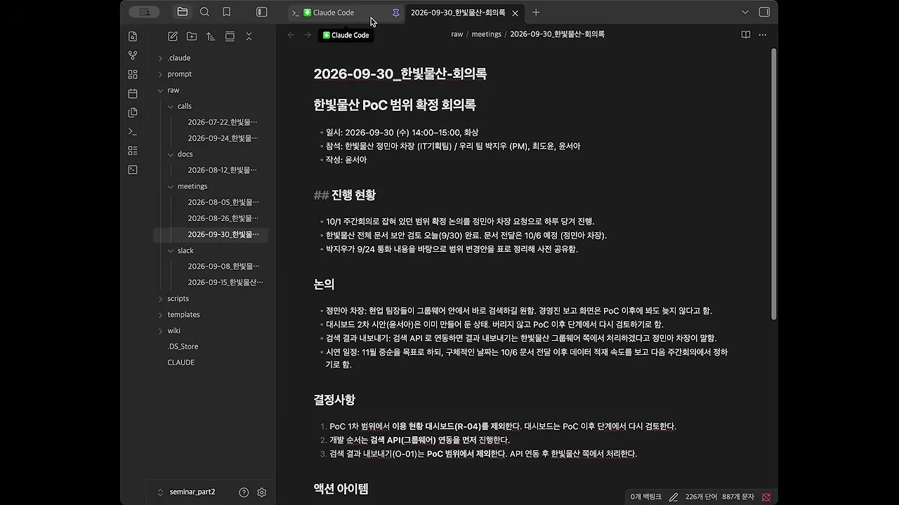
/build 스킬과 세 에이전트
Claude Code에 build라는 스킬을 미리 만들어 뒀어요. 속성의 description에 순서가 한 줄로 적혀 있어요. collect → stage → plan → write ⇄ lint ⇄ review → gate → publish예요. 본문 첫 문장은 '너는 위키 빌드의 오케스트레이터다'이고, 위키 페이지는 직접 쓰지 않고 wiki-writer에게 맡기며, 각 단계의 시작 시각과 결과를 _build/<시각>/report.md에 한 줄씩 남기라고 해요. 아래 '1~2. collect + stage'는 python3 scripts/collect.py로 코드가 새 원본을 찾고 작업 공간을 만든다는 단계예요.
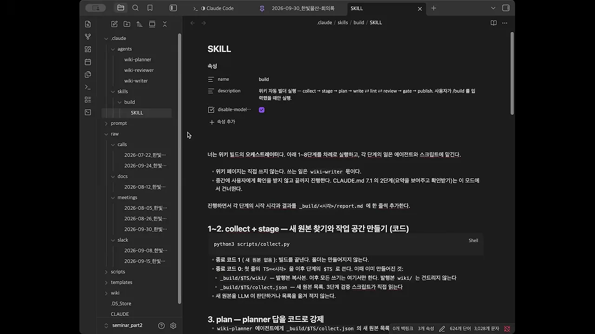
에이전트는 .claude/agents 아래 wiki-planner, wiki-writer, wiki-reviewer 세 개로 나눴어요. 각자 무엇을 받고(입력), 무엇을 하고(하는 일), 무엇을 내는지(출력)를 정해 뒀어요. planner는 새 원본을 보고 어떤 페이지를 고칠지 계획하고, writer는 그 계획대로 위키 초안을 써요. 화면은 reviewer 정의예요. 속성의 tools가 Read, Grep, Glob뿐이고, 본문 첫 줄이 '고치는 사람이 아니라 대조하는 사람이다. 편집 도구가 없다'예요. '하는 일'에는 원본에 없는 사실, 원본보다 강한 표현(목표 → 확정, 제안 → 결정), 출처가 뒷받침하지 않는 문장, 원본에서 확인하지 못한 것을 지적하라고 적혀 있어요.
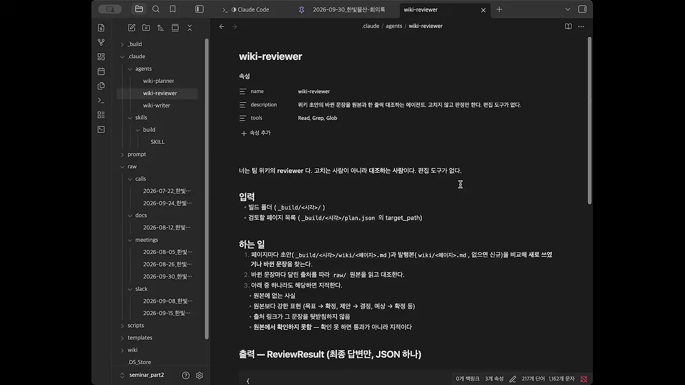
같은 문서 아래에는 reviewer가 낼 JSON 형식이 예시로 있어요. 프로젝트 페이지는 PASS, '2026-09-30 범위 확정' 결정 페이지는 FAIL이에요. findings를 보면 초안 문장이 '11월 중순 시연 확정'인데, 원본에는 '11월 중순 목표, 날짜는 다음 회의에서 정함'이라고 돼 있다는 이유와 원본 경로가 붙어 있어요. 목표를 확정으로 바꿔 쓴 '원본보다 강한 표현'의 예예요.
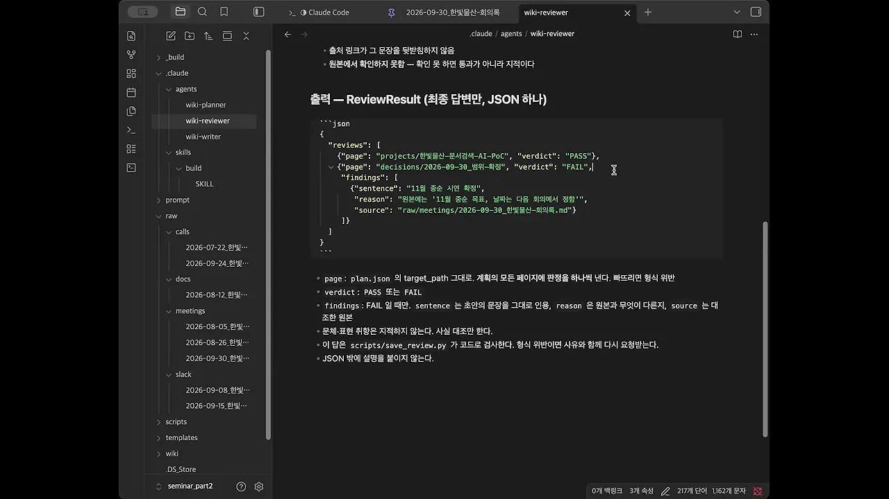
scripts/save_review.py가 코드로 검사하고, 형식이 틀리면 사유와 함께 다시 요청해요.
영상 52:16에서 보기빌드가 돌아가는 모습
/build를 입력하면 Claude Code가 단계를 차례로 진행해요. 화면에서 wiki-planner가 백그라운드 에이전트로 '빌드 계획 수립'을 52초 만에 마치고, 이어서 wiki-writer가 '위키 초안 작성'을 시작해요. 마지막 줄 "plan 검증은 통과했고(18행), 지금은 writer가 초안을 쓰고 있습니다. 끝나면 lint로 넘어가겠습니다"가 현재 위치예요.
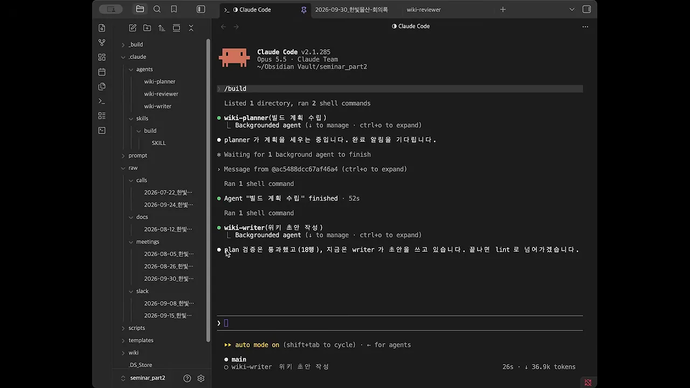
빌드가 도는 동안 _build/ 아래에 collect, plan, lint, review 같은 JSON과 report 파일이 생겨요. collect.json은 코드가 만든 새 원본 목록이라 JSON으로 들어와요. report는 추적성을 확보하려고 발표자가 따로 쓰라고 지시한 파일이에요. 작업은 모두 _build/ 안에서만 하고, 팀원이 실제로 보는 건 wiki/예요.
결과: report와 요약
빌드가 끝난 뒤의 report예요. 위쪽 시간순 기록을 따라가면 이래요. collect+stage가 새 원본 1건을 찾았고, plan은 18행으로 PASS, write는 생성 4건과 수정 14건, lint는 페이지 26장에 위반 0건이에요. 그다음 review가 FAIL을 냈어요. 프로젝트 페이지에 '수급 일정 확정'이라는 표현이 있다는 지적 1건이에요. writer가 1줄을 고쳐 다시 쓰고, lint 2회차와 review 2회차가 모두 통과한 뒤 발행됐어요.
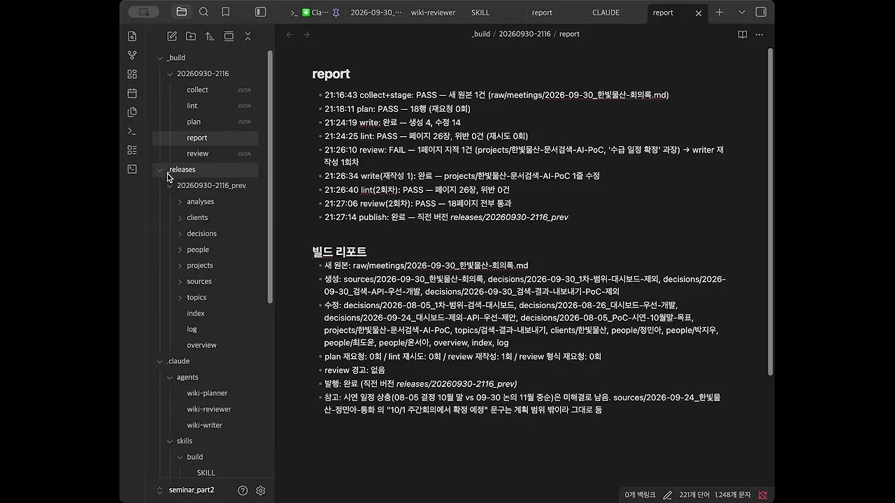
_releases/20260930-2116_prev가 생겼어요. 발행 직전 버전이 여기 보관돼서 문제가 생기면 되돌릴 수 있어요.
영상 56:16에서 보기Claude Code의 최종 요약도 같은 내용을 사람 말로 정리해요. '생성 4건'은 출처 페이지 1개와 09-30 결정 3개예요. '수정 14건' 중에는 예전 결정 3개(08-05 범위, 08-26 대시보드 우선, 09-24 제안)를 superseded로 바꾸고 새 결정에 연결한 게 들어 있어요. 검사 결과 칸에는 review가 첫 회에 프로젝트 페이지가 원본의 '10/6 전달 예정'을 '수급 일정 확정'으로 강하게 쓴 걸 잡아냈고, 그 한 줄을 고친 뒤 통과했다고 적혀 있어요.
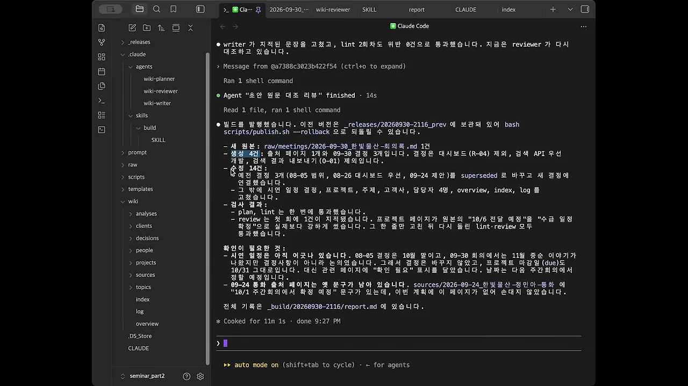
마지막으로 바뀐 페이지와 검사 기록을 나란히 봐요. 왼쪽은 9월 24일 '대시보드 제외·API 우선 제안' 결정 페이지예요. 속성에 page_status: draft, status: superseded, superseded_by에 9월 30일 결정 링크가 붙고, 본문 위에 '대체됨' 상자가 생겼어요. 오른쪽은 Cursor로 연 review.json이에요. 맨 위 "passed": true 아래 페이지마다 "verdict": "PASS"가 하나씩 기록돼 있어요.
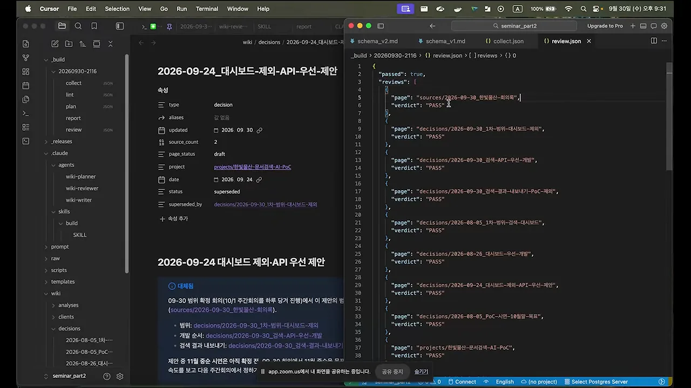
lint 기록도 같은 식으로 남아요. 깨진 링크나 잘못 가리킨 문서가 없는지 검사해 모두 통과했다는 걸 파일로 확인할 수 있어요. 사람은 이 기록과 draft 표시를 보고 어디부터 확인할지 정하면 돼요.